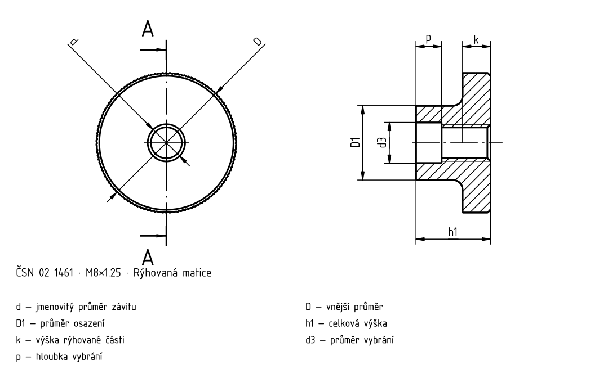
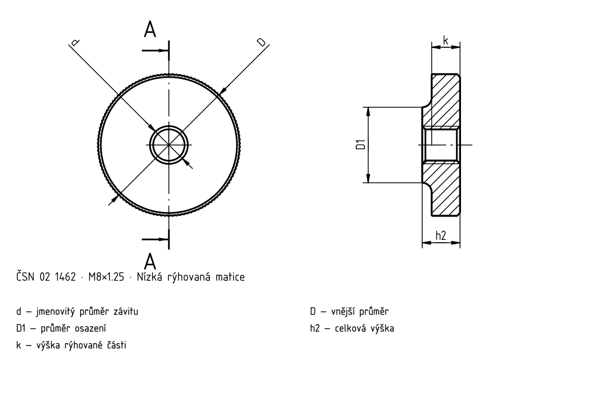

Rýhované matice
Historický podklad; číselné hodnoty a výjimky nejsou úplně ověřené proti platné normě.


Rýhované matice
| d | c | R | t | D | D 1 | k | h 1 | h 2 | p | d 3 |
|---|---|---|---|---|---|---|---|---|---|---|
| M1 | 0,2 | 0,5 | 0,5 | 5,5 | 2,8 | 1,5 | 3,5 | 2 | 2 | 1,2 |
| M1,2 | 0,2 | 0,5 | 0,5 | 6 | 3 | 1,5 | 4 | 2 | 2 | 1,4 |
| M1,6 | 0,2 | 0,5 | 0,5 | 7,5 | 3,8 | 2 | 5 | 2,5 | 2,5 | 2 |
| M2 | 0,2 | 0,5 | 0,6 | 9 | 4,5 | 2 | 5 | 2,5 | 2,5 | 2,5 |
| M2,5 | 0,3 | 0,5 | 0,6 | 10 | 5 | 2,5 | 6 | 3 | 2,6 | 3 |
| M3 | 0,4 | 0,5 | 0,6 | 12 | 6 | 2,5 | 7 | 3 | 3 | 3,5 |
| M4 | 0,4 | 0,5 | 0,6 | 16 | 8 | 3,5 | 9 | 4 | 3,5 | 4,6 |
| M5 | 0,5 | 1 | 0,6 | 20 | 10 | 4 | 11 | 5 | 4,5 | 5,6 |
| M6 | 0,6 | 1 | 0,6 | 24 | 12 | 5 | 14 | 6 | 5,5 | 6,8 |
| M8 | 0,6 | 2 | 0,8 | 30 | 16 | 6 | 16 | 8 | 5,5 | 8,8 |
| M10 | 0,8 | 2 | 0,8 | 36 | 20 | 8 | 20 | 10 | 7 | 11 |
Rýhované matice
| d | c | R | t | D | D 1 | k |
|---|---|---|---|---|---|---|
| M1 | 0,2 | 0,5 | 0,5 | 5,5 | 2,8 | 1,5 |
| M1,2 | 0,2 | 0,5 | 0,5 | 6 | 3 | 1,5 |
| M1,6 | 0,2 | 0,5 | 0,5 | 7,5 | 3,8 | 2 |
| M2 | 0,2 | 0,5 | 0,6 | 9 | 4,5 | 2 |
| M2,5 | 0,3 | 0,5 | 0,6 | 10 | 5 | 2,5 |
| M3 | 0,4 | 0,5 | 0,6 | 12 | 6 | 2,5 |
| M4 | 0,4 | 0,5 | 0,6 | 16 | 8 | 3,5 |
| M5 | 0,5 | 1 | 0,6 | 20 | 10 | 4 |
| M6 | 0,6 | 1 | 0,6 | 24 | 12 | 5 |
| M8 | 0,6 | 2 | 0,8 | 30 | 16 | 6 |
| M10 | 0,8 | 2 | 0,8 | 36 | 20 | 8 |
Rýhované matice
| d | h 1 | h 2 | p | d 3 |
|---|---|---|---|---|
| M1 | 3,5 | 2 | 2 | 1,2 |
| M1,2 | 4 | 2 | 2 | 1,4 |
| M1,6 | 5 | 2,5 | 2,5 | 2 |
| M2 | 5 | 2,5 | 2,5 | 2,5 |
| M2,5 | 6 | 3 | 2,6 | 3 |
| M3 | 7 | 3 | 3 | 3,5 |
| M4 | 9 | 4 | 3,5 | 4,6 |
| M5 | 11 | 5 | 4,5 | 5,6 |
| M6 | 14 | 6 | 5,5 | 6,8 |
| M8 | 16 | 8 | 5,5 | 8,8 |
| M10 | 20 | 10 | 7 | 11 |